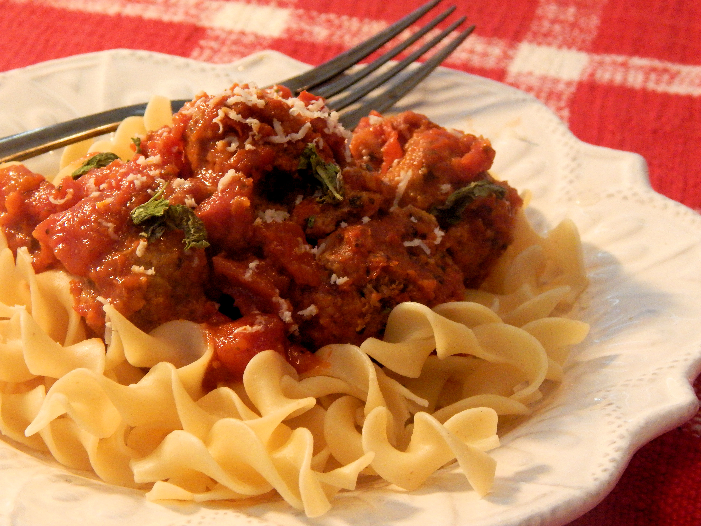

Turkey Meatballs in Tomato Sauce

Description
Delicious recipe for your thanks giving day. Enjoy with your family a traditional dish from Maroc
Ingredients
- ¼ cup minced onion
- 1 tablespoon Italian-style salad dressing
- 1 ½ pounds ground turkey
- 1 ¼ cups Italian-seasoned bread crumbs
- 5 cloves garlic, crushed
- 2 tablespoons Italian seasoning
- salt and ground black pepper to taste
- 2 (14.5 ounce) cans Italian-style diced tomatoes
- 1 (26 ounce) jar marinara sauce
- 2 teaspoons dried basil
Steps
- Saute onion and Italian dressing in a small saute pan over medium heat for 5 minutes. Remove from heat and let cool slightly, about 5 minutes.
- Combine turkey, bread crumbs, garlic, sauteed onions, Italian seasoning, salt, and pepper in a bowl; mix well.
- Combine diced tomatoes and marinara in a second bowl; set aside.
- Form 1/2 of the turkey mixture into 1 1/2-inch meatballs and layer them in the bottom of a slow cooker. Pour 1/2 of the tomato mixture over the meatballs. Form the remaining turkey mixture into meatballs and layer with remaining tomato mixture.
- Cover and cook until no longer pink in the centers, about 4 hours on High, or 8 hours on Low.
Return to home page